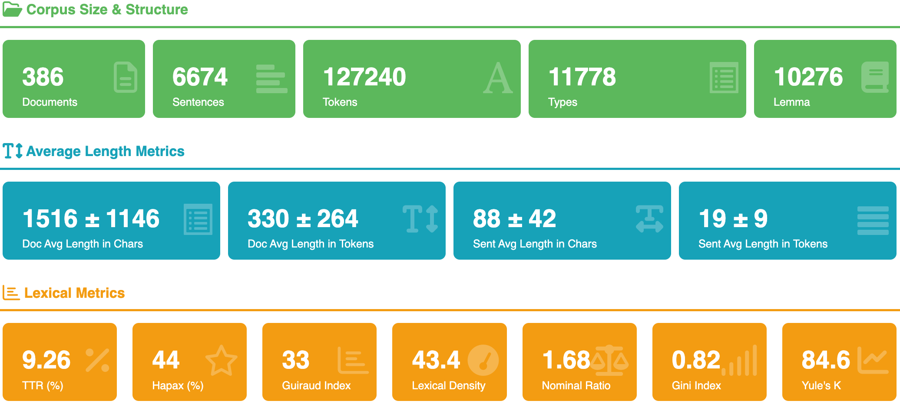
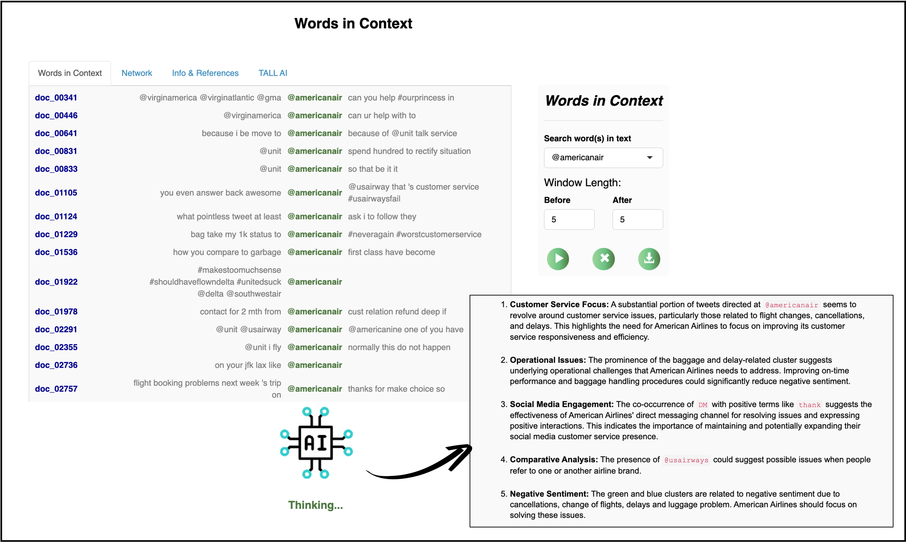
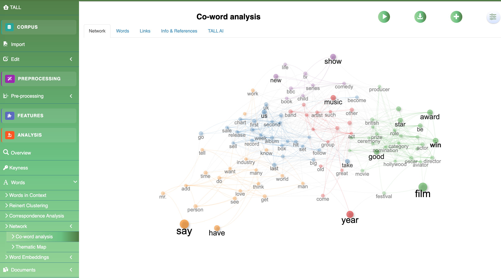
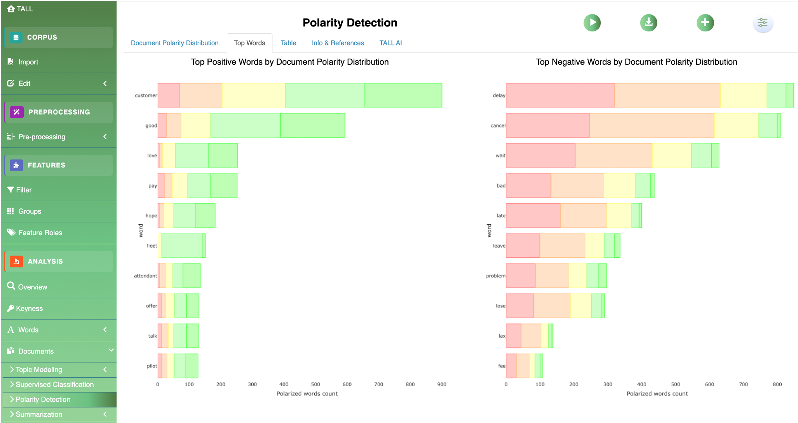

Fourteen modules.
One continuous narrative.
Word‑level and document‑level methods are grouped into coherent families. Each module is independent — you can run just one, or chain them. TALL AI adds a natural‑language interpretation alongside every output.

Descriptive statistics & lexical richness
Frequency distributions, lexical diversity measures, TF‑IDF for discriminating terms across document sets, and interactive word clouds via plotly with zoom and tooltip interactions.

@AmericanAirlines mentions across the US Airline Tweets corpus.
Words in Context (KWIC)
Concordance analysis reveals co‑text environments and usage patterns that frequency counts alone cannot surface. Combines classical close reading with AI‑assisted pattern recognition.
Based on Wulff & Baker (2020).

Co‑occurrence networks & embeddings
Co‑word analysis via igraph and visNetwork with community detection and centrality metrics. Word embeddings through word2vec let you explore semantic relationships interactively.
Version 1.0 adds dependency‑based word networks with filters over syntactic relations — subject, object, modifier, complement — revealing grammatical structures behind the statistical patterns.

Polarity & emotion detection
Three sentiment lexicons side‑by‑side: Hu & Liu, Loughran‑McDonald (finance), and the NRC Emotion Lexicon for eight emotions — anger, anticipation, disgust, fear, joy, sadness, surprise, trust.
Outputs include donut‑chart overall distributions, per‑document breakdowns, and top‑word panels grouped by sentiment category. Context‑sensitive rules handle negation and intensifiers.

Topic modeling v1.0
Three topic modeling families — Latent Dirichlet Allocation (LDA), Correlated Topic Model (CTM), and Structural Topic Model (STM). Automatic K selection based on coherence and exclusivity diagnostics.
Intensive computations run asynchronously through future and promises, keeping the interface responsive on long runs.

Text summarisation
Extractive summarisation through textrank — similarity graph with centrality ranking for key sentence extraction — plus abstractive summarisation through TALL AI for condensed narrative overviews.